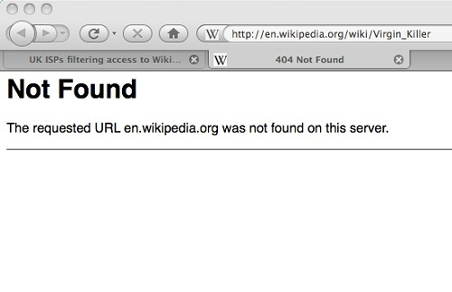
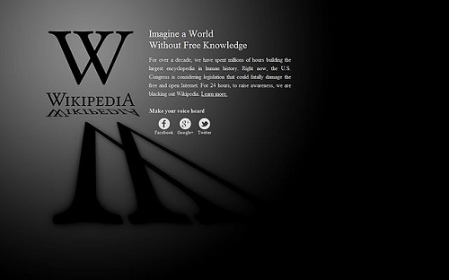

451 讓事實不被掩蓋

對於大多數使用網路的人而言，使用 WWW 就是透過瀏覽器，在網址列輸入 URL，瀏覽器依此 URL 向伺服器發出請求 (Request)，伺服器再根據請求資訊，將回應 (Response) 的內容送到使用者的瀏覽器上。上述的流程看似直覺，然而實際運作並非如此乾脆俐落，HTTP 的設計還包含介於 User Agent 與 Server 之間的中介程式 (Intermediary)，中介程式可能讓請求與回應直接通過，也可能為了增加效能、節省頻寬、過濾內容或保 護使用者隱私等原因改寫請求或回應內容。例如許多公司不允許員工在上班時間透過網路連上與業務無關的網站（例如運動賽事報導），因而藉 Proxy 過濾特定 URL 即是一種類型的中介程式運用，而 TOR 則是為了保護使用者隱私的另一種中介程式。
近日智慧財產局打算修法，針對認定為侵權的境外網站，直接下令 ISP 業者封鎖，阻絕台灣使用者獲取境外侵權資訊，技術上要攔阻網站做法很多，一種簡單的方法是 ISP 以其主幹上的 HTTP Proxy 比對使用端的請求後，經判斷為應阻絕網站，則不將請求導向伺服器，且直接回應攔阻訊息給使用端，如此一來，使用端的 User Agent 收到的不是真正伺服器的回應頁面，而是中介程式的替代內容。
英國的網路觀察基金會 Internet Watch Foundation (IWF) 主要的工作是監看網路上的兒童色情及其他有害資訊，該基金會長期整理維護網站黑名單，英國許多 ISP 業者均採用此黑名單用以過濾兒童色情資訊。2008 年 12 月，IWF 將 Wikipedia 一頁介紹某張 1976 年發行的重金屬搖滾樂唱片列為黑名單，因為該唱片的封面是一個未成年少女的裸體照片，IWF 認定此封面照片為兒童色情，將 Wikipedia 這個頁面加入黑名單。雖然只是過濾一頁，但 ISP 採用的過濾方法相當笨拙，因此在那段時間，英國的用戶連上未攔阻的 Wikipedia 的頁面或其他功能都發生困難。更甚者，使用者連上這頁受阻攔唱片頁面時，得到的是一個「造假的」 404 狀態碼（圖 1），許多人認為英國 ISP 的中介程式將攔阻內容以 404 Not Found 之錯誤訊息回應給使用者，是破壞了使用 HTTP Status Code 傳遞訊息的常規。

▲ 圖 1：「造假的」 404 狀態碼。
（圖片來源：https://en.wikinews.org/wiki/File:VK_WikipediaBlock.png）
HTTP Status Code 是伺服器回應 User Agent 請求時同時傳送的一個特定意義代碼，用以告訴 User Agent 關於伺服器處理其請求內容之後的額外資訊，最常看到的有 200 OK、302 Found、304 Not Modified、403 Forbidden、404 Not Found 等。前述英國 ISP 中介程式以 404 回應 User Agent，其代表的意思是該 URL 連結的內容不存在，這是很嚴重的誤導。即便當時沒有一個 HTTP Status Code 用以表示沒有通過內容檢查的代碼，但是中介程式還是應該告知使用端看不到內容的真正理由，維持網路的中立性。因為沒有標準，成了 ISP 便宜行事的藉口，除了 404 之外，403 也是 ISP 常用來回應給使用端且不提供真正攔阻理由說明。
HTTP Status Code 最早定義於 1999 年的 IETF RFC 2616，過去幾年也有不少與 HTTP 有關的 RFC 通過，HTTP 狀態碼也因此漸漸擴充，甚至也有公司（如微軟）或服務（如 Twitter）自行定義狀態碼。去年 6 月初，一位英國的工程師 Terence Eden 在他的部落格提到，用 403 或 404 表達資訊過濾阻絕是違反事實，而且提出一些不同的建議方案。這篇文章引發一些網友在 Slashdot 上面討論要定義一個新的 HTTP Status Code 以忠實呈現網頁內容攔阻的情況，最後 451 得到最多人的贊同，兩天之後 Google 的工程師 Tim Bray，他也是 XML 規格的撰寫者之一，向 IETF 提交了一份規格草案 "A New HTTP Status Code for Legally-restricted Resources" ，如果這個規格受到認可，未來就會用 451 Unavailable For Legal Reasons 來表明資訊被攔阻無法取得的狀態，規格內也提到 "Responses using this status code SHOULD include an explanation, in the response body, of the details of the legal restriction; which legal authority is imposing it, and what class of resources it applies to." 強烈建議回應內文中將攔阻網頁的法律權責機關與相關條文說明清楚。
選擇 451 這個三位數代碼是呼應 Ray Bradbury 的反烏托邦小說《華氏 451 度》的故事主軸，這本小說描寫未來世界，在這個世界思想被壓制，人們不能擁有書籍，小說故事的主角是一位消防員，他的工作就是焚燒書籍，而華氏 451 度，正是紙張的燃點。
前面提到智慧財產局打算修法的舉動，引發台灣網友的不滿，網路社群用各種方式抗議，moztw.org 與 coscup.org 兩個網站發起「網站熄燈」活動，仿效去年初維基百科抗議美國 SOPA 與 PIPA 法案的全球 Blackout（圖 2），這次的熄燈活動發起單位號召大家共同響應，在智慧局提出封網草案的同時，讓網站的造訪者看到抗議的熄燈頁面，而此頁面清楚標示「ERROR 451: 本網頁基於國家法律而封鎖」及其他解釋文字。

▲ 圖 2： 去年初維基百科抗議美國 SOPA 與 PIPA 法案的全球 Blackout 熄燈活動。（圖片來源：https://upload.wikimedia.org/wikipedia/commons/2/28/Wikipedia_Blackout_Screen.jpg）
網路中立是許多人努力捍衛的成果，如果中立原則被破壞，網路使用者所看到的將是一個被修改、粉飾的世界，Tim Bray 的規格草案正是在技術上提供解決方案，讓使用者不被誤導與蒙蔽，這是網路 Geek 的人文關懷。雖然只有短短的四頁文件，卻是可以將《一九八四》或《華氏 451 度》的小說情節驅離現實世界的法寶。